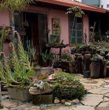

Cata-Vento
 [Categoria 1]Tabernaemontana catharinensis, também conhecida pelos nomes populares jasmim-catavento, jasmim-pipoca e leiteiro-de-folha-fina,Continuar lendo
Ruth's Flores
Tabernaemontana catharinensis, também conhecida pelos nomes populares jasmim-catavento, jasmim-pipoca e leiteiro-de-folha-fina,Continuar lendo
A astromélia, com suas folhas torcidas e pétalas de cores vivas, são excelentes paraContinuar lendo
Dar um bonsai de presente é um gesto deContinuar lendo